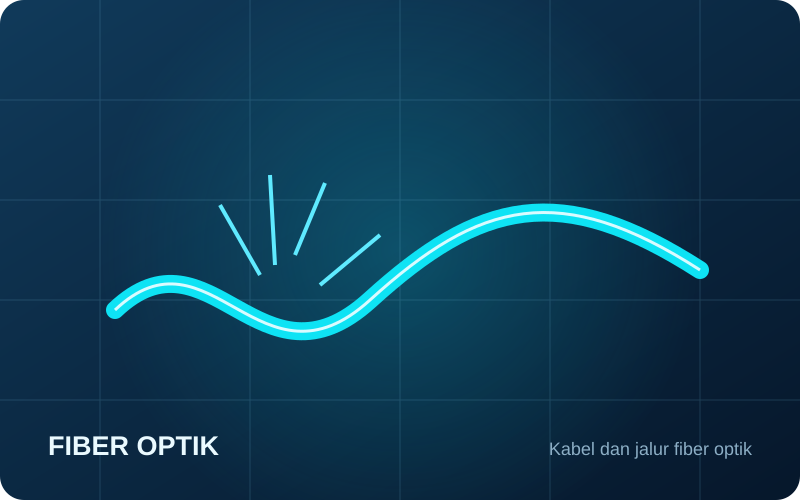
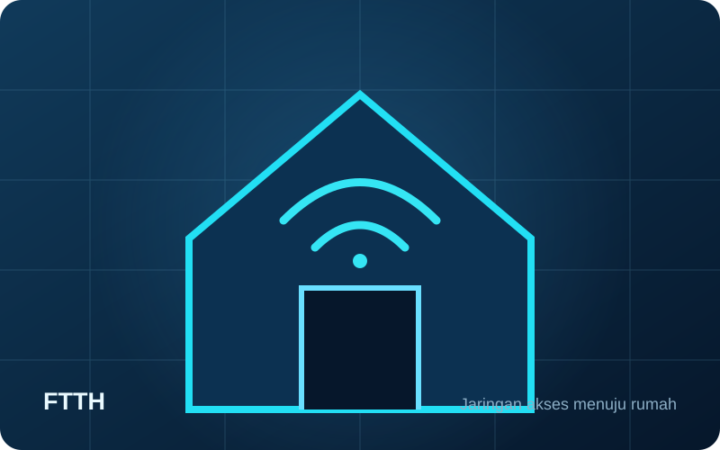
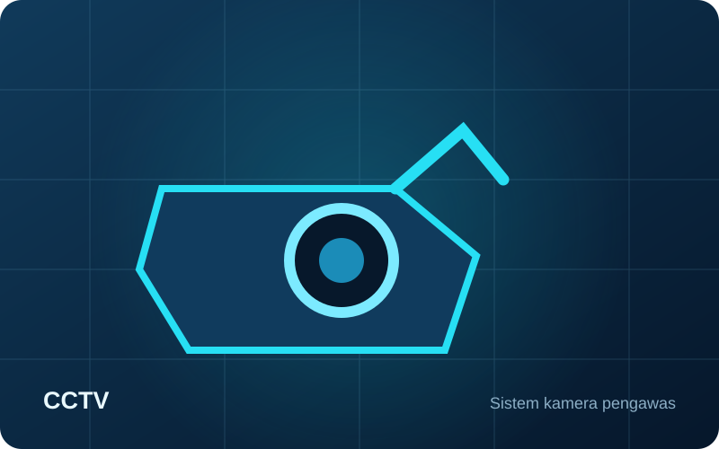

Instalasi Fiber Optik
Ilustrasi konsep pekerjaan penarikan dan penanganan kabel fiber optik.
Galeri ilustrasi yang memperkenalkan bidang pekerjaan dan solusi infrastruktur jaringan yang ditangani WIRATEL.

Ilustrasi konsep pekerjaan penarikan dan penanganan kabel fiber optik.

Ilustrasi konsep jaringan akses fiber optik menuju rumah dan bangunan.

Ilustrasi konsep pemasangan dan integrasi sistem kamera pengawas.

Ilustrasi konsep perangkat dan infrastruktur konektivitas jaringan.
Seluruh gambar galeri ini dibuat khusus sebagai ilustrasi original untuk website WIRATEL. Gambar bukan foto proyek nyata atau klaim dokumentasi pekerjaan yang telah selesai. Dokumentasi proyek aktual dapat ditambahkan setelah tersedia.